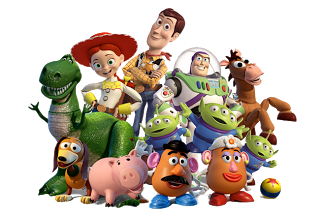
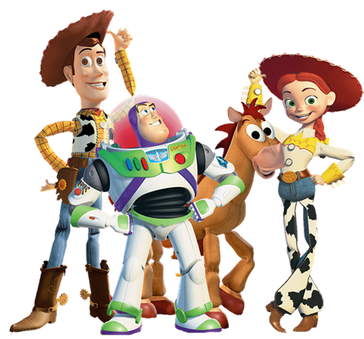
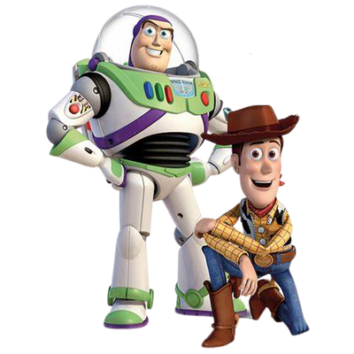

Lucca
No dia 08 de julho de 2022, ao meio-dia em ponto, nasceu o adorável Lucca, trazendo alegria à sua família. Com sua peculiaridade encantadora, uma mancha preta no bumbum e nas costinhas, ele se tornou ainda mais especial. Ao longo dos meses, Lucca surpreendeu a todos com seus belos cachos e pele pardinha, revelando uma curiosidade infinita ao engatinhar com destreza aos 9 meses e encantando com seu espírito sorridente e adorável.
Cercado pelo amor da família, Lucca continuava sua trajetória cheia de descobertas e alegrias. Mesmo ainda não tendo dado seus primeiros passinhos, todos aguardavam ansiosamente para testemunhar sua determinação e entusiasmo quando o fizesse. A cada dia, uma nova página era escrita em sua história, deixando a todos curiosos pelas próximas aventuras que o aguardavam.
Saiba mais

Família
A chegada de Lucca ao mundo foi um momento de tensão e felicidade para seus pais, após um trabalho de parto desafiador que durou mais de 15 horas. Quando finalmente nasceu, sua beleza encantadora encheu os olhos de seus pais e trouxe um amor instantâneo e indescritível. O encontro emocionante com seu irmão mais velho, Heitor, fortaleceu o vínculo entre eles, tornando-se protetor e carinhoso desde o início. Com o apoio e entusiasmo de toda a família, Lucca foi paparicado por todos, preenchendo os dias com amor, união e memórias inesquecíveis.
Palavras-chave: nascimento, amor familiar, conexão entre irmãos, união familiar.
Espero que essa versão resumida seja útil! Se precisar de mais informações ou detalhes, fique à vontade para me pedir.
Saiba mais

Curiosidades
O Lucca é uma criança notável, repleta de peculiaridades fascinantes. Suas manchas pretas únicas no bumbum e nas costas o tornam ainda mais encantador e distintivo. Além disso, com apenas 8 dentinhos, ele já possui um sorriso irresistível que conquista todos ao seu redor. Surpreendentemente, ele já reconhece seus pais, demonstrando o forte vínculo emocional que desenvolveu desde os primeiros meses de vida. A comunicação precoce de Lucca é notável, pois ele já é capaz de chamar a mamãe e o papai, mostrando sua vontade de interagir e se comunicar com as pessoas. Seu amor pelo espelho e seu gosto por brincar com o irmão Heitor refletem seu interesse em explorar o mundo e seu desenvolvimento cognitivo. As brincadeiras e cosquinhas com seus familiares criam laços de carinho e cumplicidade. É evidente que o apoio e o amor de sua família contribuem para seu desenvolvimento saudável e feliz, e cada passo de seu crescimento revela um ser extraordinário.
Saiba mais

Irmão
Lucca, um adorável menino de um ano de idade, é cheio de energia e entusiasmo, cativando a todos com seu contagiante sorriso. Sua relação com o irmão mais velho, Heitor, é verdadeiramente especial, com Lucca sempre seguindo-o com admiração e cumplicidade. Com uma forma peculiar de expressar suas vontades, Lucca chama pelo irmão quando quer compartilhar brincadeiras e aprender importantes lições de compartilhamento e compreensão.
A jornada de desenvolvimento de Lucca tem sido extraordinária, beneficiando-se da presença e influência positiva de Heitor. Juntos, eles aprendem, exploram e superam desafios, fortalecendo os laços fraternais e cultivando valores como companheirismo, paciência e empatia. O vínculo único que compartilham é uma base sólida para uma amizade duradoura e amor incondicional, trazendo alegria para toda a família e criando memórias preciosas que permanecerão em seus corações ao longo da vida. O futuro promissor dessa relação nos enche de emoção, pois testemunharemos o crescimento contínuo desse laço especial nos anos que virão.
Saiba mais